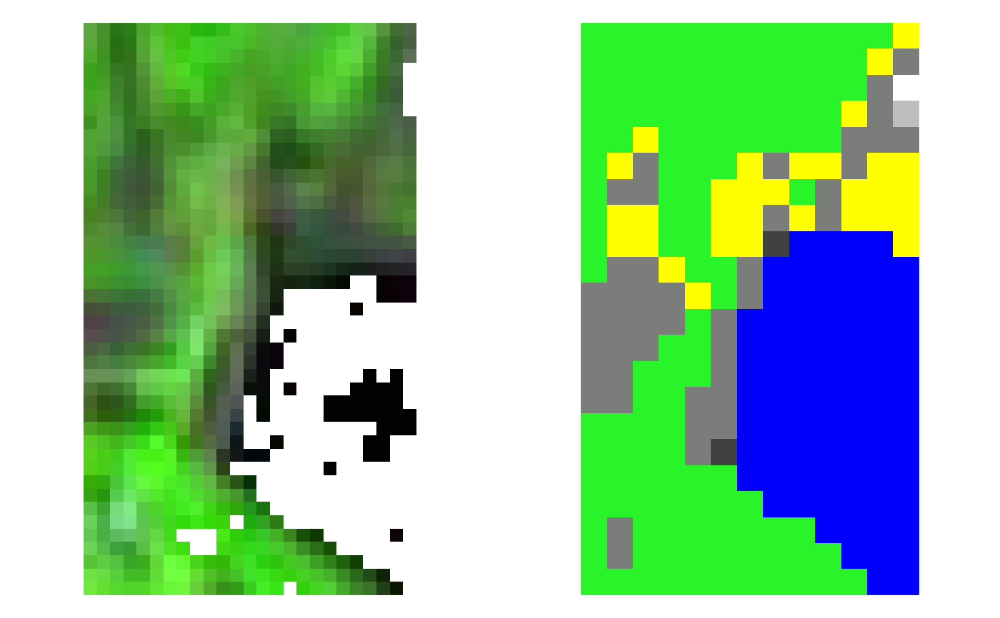

The function is a wrapper to perform the entire
processing chain to find, download and pre-process Sentinel-2
data. Input is a set of parameters that can be passed with a
list or file (parameter param_list) or singularly (see the
descriptions of all the other parameters).
sen2r(
param_list = NULL,
gui = NA,
preprocess = TRUE,
s2_levels = "l2a",
sel_sensor = c("s2a", "s2b"),
online = TRUE,
server = "scihub",
order_lta = TRUE,
apihub = NA,
downloader = "builtin",
overwrite_safe = FALSE,
rm_safe = "no",
step_atmcorr = "auto",
sen2cor_use_dem = NA,
sen2cor_gipp = NA,
max_cloud_safe = 100,
timewindow = NA,
timeperiod = "full",
extent = NA,
extent_name = "sen2r",
s2tiles_selected = NA,
s2orbits_selected = NA,
list_prods = NA,
list_rgb = NA,
list_indices = NA,
index_source = "BOA",
rgb_ranges = NA,
mask_type = NA,
max_mask = 100,
mask_smooth = 0,
mask_buffer = 0,
clip_on_extent = TRUE,
extent_as_mask = FALSE,
reference_path = NA,
res = NA,
res_s2 = "10m",
unit = "Meter",
proj = NA,
resampling = "near",
resampling_scl = "near",
outformat = "GTiff",
rgb_outformat = "GTiff",
index_datatype = "Int16",
compression = "DEFLATE",
rgb_compression = "90",
overwrite = FALSE,
path_l1c = NA,
path_l2a = NA,
path_tiles = NA,
path_merged = NA,
path_out = NA,
path_rgb = NA,
path_indices = NA,
path_subdirs = TRUE,
thumbnails = TRUE,
parallel = FALSE,
processing_order = "by_groups",
use_python = NA,
tmpdir = NA,
rmtmp = TRUE,
log = NA
)Arguments
- param_list
(optional) List of input parameters: it can be both an R list or the path of a JSON file. If some parameters are passed both as elements of
param_listand as function arguments, the values passed as function arguments are considered. If some parameters are missing inparam_listand are not provided as arguments, default values will be used. Use the functions2_gui()to create a complete list of parameters. Ifparam_listis NULL (default), values given with the parameters below (or default values for parameters not provided) are used.- gui
(optional) Logical: if TRUE, function
s2_gui()is launched before starting to process in order to set or load parameters; if FALSE, the function uses parameters passed withparam_listor with other function arguments. Default is FALSE ifparam_listis not NULL, TRUE elsewhere.- preprocess
(optional) Logical: TRUE (default) to perform also preprocessing steps, FALSE not to (do only find, download and atmospheric correction).
- s2_levels
(optional) Character vector of length 1 or 2, with Sentinel-2 levels required for processing steps or as output. This parameter is used only if
preprocess = FALSE(otherwise, the required levels are derived fromlist_prods). Accepted values: "l1c" and "l2a"; default: "l2a".- sel_sensor
(optional) Character vector of length 1 or 2, with Sentinel-2 sensors to be used. Accepted values: "s2a" and "s2b"; default: c("s2a","s2b").
- online
(optional) Logical: TRUE (default) to search for available products on SciHub and/or Google Cloud (and download if needed); FALSE to work only with already downloaded SAFE products.
- server
(optional) Character vector of length 1 or 2, with the names of the servers on which SAFE archives are searched. Available options are
"scihub"(ESA Sentinel Hub) and"gcloud"(Google Cloud). Default is"scihub", meaning that only ESA Sentinel Hub is considered. In case of multiple values, they are used in order of priority and products on LTA are always left as last choice. See also the section "Details" ofs2_list().- order_lta
(optional) Logical: TRUE (default) to order products from the Long Term Archive if unavailable for direct download; FALSE to simply skip them (this option has effect only in online mode). It takes effect only if argument
serverincludes"scihub".- apihub
Path of the text file containing credentials of SciHub account. If NA (default), the default location inside the package will be used. It takes effect only if argument
serverincludes"scihub".- downloader
(optional) Character value corresponding to the executable which should be used to download SAFE products. It could be one among
"builtin"(default) and"aria2". Ifaria2is not installed, built-in method will be used instead. It takes effect only if argumentserverincludes"scihub".- overwrite_safe
(optional) Logical: TRUE to overwrite existing products with products found online or manually corrected, FALSE (default) to skip download and atmospheric correction for products already existing.
- rm_safe
(optional) Character: should SAFE products be deleted after preprocessing? "yes" (or "all") means to delete all SAFE; "no" (default) not to delete; "l1c" to delete only Level-1C products.
- step_atmcorr
(optional) Character vector to determine how to obtain Level-2A SAFE products:
"auto"(default) means that L2A is first searched on SciHub: if found, it is downloaded, if not, the corresponding Level-1C is downloaded and sen2cor is used to produce L2A;"scihub"means that Sen2Cor is always used from L1C products downloaded from SciHub;"l2a"means that they are downloaded if available on SciHub, otherwise they are skipped (sen2cor is never used).
- sen2cor_use_dem
(optional) Logical, determining if a DEM should be used for topographic correction by Sen2Cor (see the documentation of
sen2cor()- argumentuse_demfor further details). Currently the default value is NA in order to grant backward compatibility: in this case, the option set in the XML GIPP configuration file used by sen2r (stored in the default sen2r settings directory) is respected.Note: in a future release of sen2r, the default value will be set to TRUE, so to grant homogeneity between Level-2A products downloaded from ESA Hub and generated using Sen2Cor.
- sen2cor_gipp
(optional) Ground Image Processing Parameters (GIPP) to be passed to Sen2Cor (see the documentation of
sen2cor()- argumentgipp- for details about the usage of this argument). Default value (NA) corresponds to an empty list of parameters.- max_cloud_safe
(optional) Integer number (0-100) containing the maximum cloud level of each SAFE to be considered (default: no filter). It it used to limit the research of SAFE products to "good" images, so it is applied only to non-existing archives (existing SAFE are always used). In this sense, this parameter is different from
max_mask, which can be used to set a maximum cloud coverage over output extents. Notice also that this value is used to filter on the basis of the metadata "Cloud cover percentage" associated to each SAFE, so it is not based on the cloud mask defined with the processing options.- timewindow
(optional) Temporal window for querying: Date object of length 1 (single day) or 2 (time window). Default is NA, meaning that no filters are used if online = FALSE, and all found images are processed; if online = TRUE, last 90 days are processed. Is it possible to pass also integer (or difftime) values, which are interpreted as the last n days.
- timeperiod
(optional) Character:
"full" (default) means that all the images included in the time window are considered;
"seasonal" means that only the single seasonal periods in the window are used (i.e., with a time window from 2015-06-01 to 2017-08-31, the periods 2015-06-01 to 2015-08-31, 2016-06-01 to 2016-08-31 and 2017-06-01 to 2017-08-31 are considered).
- extent
(optional) Spatial extent on which to clip products (it can be both the path of a vector file or a geoJSON). Default is NA for offline mode (meaning no extent: all found tiles are entirely used); in online mode, a sample extent is used as default.
- extent_name
(optional) Name of the area set as extent, to be used in the output file names. Default is "sen2r" The name is an alphanumeric string which cannot contain points nor underscores, and that cannot be a five-length string with the same structure of a tile ID (two numeric and three uppercase character values).
- s2tiles_selected
(optional) Character vector with the Sentinel-2 tiles to be considered (default is NA, meaning all the tiles).
- s2orbits_selected
(optional) Character vector with the Sentinel-2 orbits to be considered (still to be implemented; for now, all the accepted values are listed).
- list_prods
(optional) Character vector with the values of the products to be processed (accepted values: "TOA", "BOA", "SCL", "TCI"). Default is no one (NA).
- list_rgb
(optional) Character vector with the values of the RGB images to be produced. Images are in the form RGBrgbx, where:
x is B (if source is BOA) or T (is source is TOA);
r g and b are the the number of the bands to be used respectively for red, green and blue, in hexadecimal format. Notice that this is the actual number name of the bands: so, to use i.e. BOA band 11 (1610nm) use the value "b", even if band 11 is the 10th band of a BOA product (because band 10 is missing). (e.g., RGB432B, RGB843B) Default is no one (NA).
- list_indices
(optional) Character vector with the values of the spectral indices to be computed. Default is no one (NA).
- index_source
(optional) Character value: if "BOA" (default), indices are computed from BOA values; if "TOA", non corrected reflectances are instead used (be careful to use this setting!).
- rgb_ranges
(optional) Range of valid values to be used for RGB products. Values must be provided in the same scale used within SAFE and BOA/TOA products (0-10000, corresponding to reflectances * 10000). If can be a 2-length integer vector (min-max for all the 3 bands) or a 6-length vector or 3x2 matrix (min red, min green, min blue, max red, max green, max blue). Default is to use c(0,2500) for bands 2, 3 and 4; c(0,7500) for other bands. In case
list_rgbis a vector of length > 1,rgb_rangesmust be a list of the same length (otherwise, the same range values will be used for all the RGB products).- mask_type
(optional) Character value which determines the categories in the Surface Classification Map to be masked (see
s2_mask()for the accepted values). Default (NA) is not to mask.- max_mask
(optional) Numeric value (range 0 to 100), which represents the maximum percentage of allowed masked surface (by clouds or any other type of mask chosen with argument
mask_type) for producing outputs. Images with a percentage of masked surface greater thanmax_mask% are not processed (the list of expected output files which have not been generated is returned as an attribute, named "skipped"). Default value is 100 (all products are produced). This parameter is different frommax_cloud_safe, because:it is computed over the selected extent;
it is computed starting from the cloud mask defined as above. Notice that the percentage is computed on non-NA values (if input images had previously been clipped and masked using a polygon, the percentage is computed on the surface included in the masking polygons).
- mask_smooth
(optional) Numeric positive value: the smoothing radius (expressed in unit of measure of the output projection, typically metres) to be applied to the cloud mask by function
s2_mask().- mask_buffer
(optional) Numeric value: the buffering radius (expressed in unit of measure of the output projection, typically metres) to be applied to the cloud mask by function
s2_mask(). Default value (0) means that no buffer is applied; a positive value causes an enlargement of the masked area; a negative value cause a reduction.- clip_on_extent
(optional) Logical: if TRUE (default), output products and indices are clipped to the selected extent (and resampled/reprojected); if FALSE, the geometry and extension of the tiles is maintained.
- extent_as_mask
(optional) Logical: if TRUE, pixel values outside the
extentpolygon are set to NA; if FALSE (default), all the values within the bounding box are maintained.- reference_path
(optional) Path of the raster file to be used as a reference grid. If NA (default), no reference is used.
- res
(optional) Numeric vector of length 2 with the x-y resolution for output products. Default (NA) means that the resolution is kept as native.
- res_s2
(optional) Character value corresponding to the native Sentinel-2 resolution to be used. Accepted values are "10m" (default), "20m" and "60m".
- unit
(optional) Character value corresponding to the unit of measure with which to interpret the resolution (for now, only "Meter" - the default value - is supported).
- proj
(optional) Character string with the pro4string of the output resolution. default value (NA) means not to reproject.
- resampling
(optional) Resampling method (one of the values supported by
gdal_translate:"near"(default),"bilinear","cubic","cubicspline","lanczos","average"or"mode").- resampling_scl
(optional) Resampling method for categorical products (for now, only SCL): one among
"near"(default) and"mode".- outformat
(optional) Format of the output file (in a format recognised by GDAL). Default is
"GTiff". Value"BigTIFF"can be used to generate a GeoTIFF with the option BigTIFF- rgb_outformat
(optional) Format of the output RGB products (in a format recognised by GDAL). Default is
"GTiff".- index_datatype
(optional) Numeric datatype of the output spectral indices (see
s2_calcindices().- compression
(optional) In the case GTiff is chosen as output format, the compression indicated with this parameter is used (default is "DEFLATE").
- rgb_compression
(optional) In the case
GTiffis chosen as output format for RGB products, the compression indicated with this parameter is used (default is"DEFLATE"). In the cases GTiff or JPEG are chosen as output format for RGB products, this parameter can also be a 1-100 integer value, which is interpreted as the compression level for a JPEG compression.- overwrite
(optional) Logical value: should existing output files be overwritten? (default: FALSE).
- path_l1c
(optional) Path of the directory in which Level-1C SAFE products are searched and/or downloaded. If not provided (default), a temporary directory is used.
- path_l2a
(optional) Path of the directory in which Level-2A SAFE products are searched, downloaded and/or generated. If not provided (default), a temporary directory is used.
- path_tiles
(optional) Path of the directory in which Sentinel-2 tiles (as generated by
s2_translate()) are searched and/or generated. If not provided (default), a temporary directory is used, and files are generated as virtual rasters; otherwise, they are generated in the format specified withoutformatparameter.- path_merged
(optional) Path of the directory in which Sentinel-2 tiles merged by orbit (as generated by
s2_merge()) are searched and/or generated. If not provided (default), a temporary directory is used, and files are generated as virtual rasters; otherwise, they are generated in the format specified withoutformatparameter.- path_out
(optional) Path of the directory in which Sentinel-2 output products are searched and/or generated. If not provided (default), a temporary directory is used.
- path_rgb
(optional) Path of the directory in RGB products are searched and/or generated. If not provided (default),
path_outis used.- path_indices
(optional) Path of the directory in which files of spectral indices are searched and/or generated. If not provided (default),
path_outis used.- path_subdirs
(optional) Logical: if TRUE (default), a directory for each output product or spectral index is generated within
path_tiles,path_merged,path_outandpath_indices; if FALSE, products are put directly within them.- thumbnails
(optional) Logical: if TRUE (default), a thumbnail is added for each product created. Thumbnails are JPEG or PNG georeferenced small images (width or height of 1024 pixels) with default colour palettes (for more details, see the help window in the GUI). They are placed in a subdirectory of the products names
"thumbnails". If FALSE, they are not created.- parallel
(optional) Logical or integer: setting to TRUE, the processing is executed using multiple cores in order to speed up the execution. Parallelisation is performed on groups of dates. The number of cores is automatically determined; specifying it is also possible (e.g.
parallel = 4). If FALSE (default), the processing chain is forced to run with a single core (this can be useful if multiplesen2r()instances are run in parallel).- processing_order
(optional) Character string: order used to execute the processing chain (this affects the speed of computation and the usage of system resources). Values can be one of the followings:
"4"or"by_groups"(default): it provides a good compromise between processing speed and disk usage. Processing is done as follows:the list of required SAFE and output product names is computed;
the required dates are grouped in $g$ groups, where $g$ is the number of dates divided by the number of CPU;
groups are then processed sequentially; for each group:
the required SAFE archives are downloaded;
Sen2Cor is applied in parallel using one core per L1C SAFE archive;
the remaining processing operations are executed using parallel R sessions (one core for each date).
"2"or"by_date": this allows minimising the requirements of disk usage (in particular if SAFE archives are deleted after processing). It is similar to the default execution, but each group is composed by a single date: so the disk space occupied by SAFE archives and temporary files is lower, but it is generally slower than the default one because parallel computation over dates for products' generation is not possible."3"or"mixed": this allows maximising CPU usage and processing speed. The cycle on groups is ignored, and all the required SAFE are first of all downloaded and/or produced, and then dates are processed in parallel. This mode is faster than the default mode, but it requires all SAFE archives to be downloaded and processed before performing subsequent steps, thus increasing disk space requirements."1"or"by_step": this is the legacy mode, in which the cycle on groups is ignored as well as the parallel computation over dates. All SAFE archives are first downloaded/processed, then the processing steps are performed sequentially. This mode is similar to the previous one in terms of disk usage but it is slightly slower; its advantage are the lower RAM requirements.
- use_python
Deprecated argument
- tmpdir
(optional) Path where intermediate files will be created. Default is a temporary directory (unless
outformat = "VRT": in this case, default is a subdirectory named ".vrt" withinpath_out).- rmtmp
(optional) Logical: should temporary files be removed? (Default: TRUE).
rmtmpis forced toFALSEifoutformat = "VRT".- log
(optional) Character string with the path where the package messages will be redirected. Default (NA) is not to redirect (use standard output). A two-length character with two paths (which can also coincide) can be used to redirect also the output: in this case, the first path is the path for messages, the second one for the output.
Value
A vector with the paths of the files which were created (excluded the temporary files); NULL otherwise. The vector includes some attributes:
cloudcoveredwith the list of images not created due to the higher percentage of cloud covered pixels;missingwith the list of images not created due to other reasons;procpathwith the path of a json parameter file, created after eachsen2r()run, containing the parameters used in the execution of the function;ltapathwith the path of a json file containing the list of the SAFE Sentinel-2 archives eventually ordered in Long Term Archive.statuswith a data.frame summarising the status of the processing (seesen2r_process_report()).
Note
License: GPL 3.0
References
L. Ranghetti, M. Boschetti, F. Nutini, L. Busetto (2020). "sen2r": An R toolbox for automatically downloading and preprocessing Sentinel-2 satellite data. Computers & Geosciences, 139, 104473. doi:10.1016/j.cageo.2020.104473 , URL: https://sen2r.ranghetti.info/.
Examples
# \donttest{
# Open an interactive section
if (interactive()) {
sen2r()
}
# Launch a processing from a saved JSON file (here we use an internal function
# to create a testing json file - this is not intended to be used by final users)
json_path <- build_example_param_file()
if (is_gcloud_configured()) {
out_paths_2 <- sen2r(json_path)
} else {
out_paths_2 <- character(0)
}
#> [2022-09-05 23:20:47] #### Starting sen2r execution. ####
#> Spherical geometry (s2) switched off
#> Loading required namespace: stringi
#> Registered S3 method overwritten by 'geojsonlint':
#> method from
#> print.location dplyr
#> [2022-09-05 23:20:49] Searching for available SAFE products...
#> old-style crs object detected; please recreate object with a recent sf::st_crs()
#> old-style crs object detected; please recreate object with a recent sf::st_crs()
#> [2022-09-05 23:20:50] Querying Google Cloud (this can take a very long
#> time)...
#> [2022-09-05 23:21:05] Computing output names...
#> [2022-09-05 23:21:07] Starting to download the required level-2A SAFE
#> products.
#> Images
#> S2B_MSIL2A_20200801T100559_N0214_R022_T32TNS_20200801T135302.SAFE are
#> already on your system and will be skipped. Set "overwrite_safe" to
#> TRUE to re-download them.
#> No L2A images are needed.
#> [2022-09-05 23:21:07] Download of level-2A SAFE products terminated.
#> [2022-09-05 23:21:07] Starting to download the required level-1C SAFE
#> products.
#> No L1C images are needed.
#> [2022-09-05 23:21:07] Download of level-1C SAFE products terminated.
#> [2022-09-05 23:21:07] Updating output names...
#> [2022-09-05 23:21:07] Starting to translate SAFE products in custom
#> format.
#> Using UTM zone 32N.
#> 2 output files were correctly created.
#> [2022-09-05 23:21:08] Starting to merge tiles by orbit.
#> [2022-09-05 23:21:08] Starting to edit geometry (clip, reproject,
#> rescale).
#> [2022-09-05 23:21:11] Producing required RGB images.
#> [2022-09-05 23:21:11] Generating image
#> S2B2A_20200801_022_sen2r_RGB432B_10.tif...
#> [2022-09-05 23:21:27] Generating image
#> S2B2A_20200801_022_sen2r_RGB843B_10.tif...
#> 2 output RGB files were correctly created.
#> [2022-09-05 23:22:11] Computing required spectral indices.
#> [2022-09-05 23:22:11] Computing index MSAVI2 on date 2020-08-01...
#> [2022-09-05 23:22:25] Computing index NDVI on date 2020-08-01...
#> [2022-09-05 23:22:39] Generating thumbnails.
#> 6 output files were correctly created.
#> ╔══════════════════════════════════════════════════════════════════════
#> ║ sen2r Processing Report
#> ╟──────────────────────────────────────────────────────────────────────
#> ║ Dates to be processed based on processing parameters: 1
#> ║ Processing completed for: all expected dates.
#> ╚══════════════════════════════════════════════════════════════════════
#> [2022-09-05 23:22:55] #### sen2r session terminated. ####
#> The processing chain can be re-launched with the command:
#> sen2r("/home/lranghetti/.sen2r/proc_par/s2proc_20220905_232047.json")
#> Spherical geometry (s2) switched on
# Notice that passing the path of a JSON file results in launching
# a session without opening the gui, unless gui = TRUE is passed.
# Launch a processing using function arguments
safe_dir <- file.path(dirname(attr(load_binpaths(), "path")), "safe")
out_dir_3 <- tempfile(pattern = "Barbellino_")
if (is_gcloud_configured()) {
out_paths_3 <- sen2r(
gui = FALSE,
server = "gcloud",
step_atmcorr = "l2a",
extent = system.file("extdata/vector/barbellino.geojson", package = "sen2r"),
extent_name = "Barbellino",
timewindow = as.Date("2020-08-01"),
list_prods = c("TOA","BOA","SCL","OAA"),
list_indices = c("NDVI","MSAVI2"),
list_rgb = c("RGB432T", "RGB432B", "RGB843B"),
mask_type = "cloud_medium_proba",
max_mask = 80,
path_l1c = safe_dir,
path_l2a = safe_dir,
path_out = out_dir_3
)
} else {
out_paths_3 <- character(0)
}
#> [2022-09-05 23:22:56] #### Starting sen2r execution. ####
#> Spherical geometry (s2) switched off
#> [2022-09-05 23:22:56] Searching for available SAFE products...
#> old-style crs object detected; please recreate object with a recent sf::st_crs()
#> old-style crs object detected; please recreate object with a recent sf::st_crs()
#> [2022-09-05 23:22:57] Querying Google Cloud (this can take a very long
#> time)...
#> old-style crs object detected; please recreate object with a recent sf::st_crs()
#> old-style crs object detected; please recreate object with a recent sf::st_crs()
#> [2022-09-05 23:23:14] Querying Google Cloud (this can take a very long
#> time)...
#> [2022-09-05 23:23:28] Computing output names...
#> [2022-09-05 23:23:30] Starting to download the required level-2A SAFE
#> products.
#> Images
#> S2B_MSIL2A_20200801T100559_N0214_R022_T32TNS_20200801T135302.SAFE are
#> already on your system and will be skipped. Set "overwrite_safe" to
#> TRUE to re-download them.
#> No L2A images are needed.
#> [2022-09-05 23:23:30] Download of level-2A SAFE products terminated.
#> [2022-09-05 23:23:30] Starting to download the required level-1C SAFE
#> products.
#> Images
#> S2B_MSIL1C_20200801T100559_N0209_R022_T32TNS_20200801T130136.SAFE are
#> already on your system and will be skipped. Set "overwrite_safe" to
#> TRUE to re-download them.
#> No L1C images are needed.
#> [2022-09-05 23:23:30] Download of level-1C SAFE products terminated.
#> [2022-09-05 23:23:30] Updating output names...
#> [2022-09-05 23:23:30] Starting to translate SAFE products in custom
#> format.
#> Using UTM zone 32N.
#> 1 output files were correctly created.
#> Using UTM zone 32N.
#> 1 output angle files were correctly created.
#> 3 output files were correctly created.
#> [2022-09-05 23:23:35] Starting to merge tiles by orbit.
#> [2022-09-05 23:23:35] Starting to edit geometry (clip, reproject,
#> rescale).
#> [2022-09-05 23:23:36] Starting to apply cloud masks.
#> [2022-09-05 23:23:36] Masking file
#> S2B1C_20200801_022_Barbellino_TOA_10.tif...
#> [2022-09-05 23:23:51] Masking file
#> S2B2A_20200801_022_Barbellino_BOA_10.tif...
#> [2022-09-05 23:24:05] Producing required RGB images.
#> [2022-09-05 23:24:05] Generating image
#> S2B1C_20200801_022_Barbellino_RGB432T_10.tif...
#> 1 output RGB files were correctly created.
#> [2022-09-05 23:24:20] Generating image
#> S2B2A_20200801_022_Barbellino_RGB432B_10.tif...
#> [2022-09-05 23:24:34] Generating image
#> S2B2A_20200801_022_Barbellino_RGB843B_10.tif...
#> 2 output RGB files were correctly created.
#> [2022-09-05 23:25:15] Computing required spectral indices.
#> [2022-09-05 23:25:15] Computing index NDVI on date 2020-08-01...
#> [2022-09-05 23:25:17] Computing index MSAVI2 on date 2020-08-01...
#> [2022-09-05 23:25:18] Generating thumbnails.
#> 9 output files were correctly created.
#> ╔══════════════════════════════════════════════════════════════════════
#> ║ sen2r Processing Report
#> ╟──────────────────────────────────────────────────────────────────────
#> ║ Dates to be processed based on processing parameters: 1
#> ║ Processing completed for: all expected dates.
#> ╚══════════════════════════════════════════════════════════════════════
#> [2022-09-05 23:25:47] #### sen2r session terminated. ####
#> The processing chain can be re-launched with the command:
#> sen2r("/home/lranghetti/.sen2r/proc_par/s2proc_20220905_232256.json")
#> Spherical geometry (s2) switched on
if (is_gcloud_configured()) {
# Show outputs (loading thumbnails)
# Generate thumbnails names
thumb_3 <- file.path(dirname(out_paths_3), "thumbnails", gsub("tif$", "jpg", basename(out_paths_3)))
thumb_3[grep("SCL", thumb_3)] <-
gsub("jpg$", "png", thumb_3[grep("SCL", thumb_3)])
oldpar <- par(mfrow = c(1,2), mar = rep(0,4))
image(stars::read_stars(thumb_3[grep("BOA", thumb_3)]), rgb = 1:3, useRaster = TRUE)
image(stars::read_stars(thumb_3[grep("SCL", thumb_3)]), rgb = 1:3, useRaster = TRUE)
par(mfrow = c(1,2), mar = rep(0,4))
image(stars::read_stars(thumb_3[grep("MSAVI2", thumb_3)]), rgb = 1:3, useRaster = TRUE)
image(stars::read_stars(thumb_3[grep("NDVI", thumb_3)]), rgb = 1:3, useRaster = TRUE)
par(mfrow = c(1,2), mar = rep(0,4))
image(stars::read_stars(thumb_3[grep("RGB432B", thumb_3)]), rgb = 1:3, useRaster = TRUE)
image(stars::read_stars(thumb_3[grep("RGB843B", thumb_3)]), rgb = 1:3, useRaster = TRUE)
par(oldpar)
}


 # }
if (FALSE) {
# Launch a processing based on a JSON file, but changing some parameters
# (e.g., the same processing on a different extent)
out_dir_4 <- tempfile(pattern = "Scalve_")
out_paths_4 <- sen2r(
param_list = json_path,
extent = system.file("extdata/vector/scalve.kml", package = "sen2r"),
extent_name = "Scalve",
path_out = out_dir_4
)
}
# }
if (FALSE) {
# Launch a processing based on a JSON file, but changing some parameters
# (e.g., the same processing on a different extent)
out_dir_4 <- tempfile(pattern = "Scalve_")
out_paths_4 <- sen2r(
param_list = json_path,
extent = system.file("extdata/vector/scalve.kml", package = "sen2r"),
extent_name = "Scalve",
path_out = out_dir_4
)
}